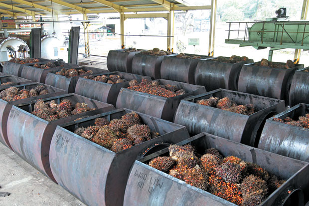

Potensi Kelapa Sawit di Jambi
Kelapa sawit (Elaeis) adalah tumbuhan industri penting penghasil minyak masak, minyak industri, maupun bahan bakar (biodiesel). Indonesia adalah penghasil minyak kelapa sawit terbesar di dunia. Di Indonesia penyebarannya di daerah Aceh, pantai timur Sumatra, Jawa, Kalimantan, dan Sulawesi.
Mengenal Kelapa Sawit =======
Kelapa sawit adalah salah satu dari beberapa palma yang menghasilkan minyak untuk tujuan komersil. Di Indonesia, tanaman kelapa sawit banyak dikebunkan oleh perusahaan-perusahaan besar, baik pemerintah maupun swasta. Bahkan masyarakat pun banyak bertanam kelapa sawit. Hal ini menunjukkan bahwa tanaman kelapa sawit sangat cocok tumbuh di Indonesia. Jika Indonesia ditargetkan untuk menjadi negara penghasil minyak kelapa sawit terbesar di dunia, tentunya banyak orang-orang yang mengelolanya, mulai dari pembibitan, penanaman sampai ke teknik pengelolahan hasil panen harus berlaku profesional.
Mengenai Kelapa Sawit >>>>>>> 13bcc427c7630e8a09550d6c961260f32092c8e1
<<<<<<< HEADKelapa sawit adalah salah satu dari beberapa palma yang menghasilkan minyak untuk tujuan komersil. Di Indonesia, tanaman kelapa sawit banyak dikebunkan oleh perusahaan-perusahaan besar, baik pemerintah maupun swasta. Bahkan masyarakat pun banyak bertanam kelapa sawit. Hal ini menunjukkan bahwa tanaman kelapa sawit sangat cocok tumbuh di Indonesia. Jika Indonesia ditargetkan untuk menjadi negara penghasil minyak kelapa sawit terbesar di dunia, tentunya banyak orang-orang yang mengelolanya, mulai dari pembibitan, penanaman sampai ke teknik pengelolahan hasil panen harus berlaku profesional.
-
=======
-
Klasifikasi dari kelapa sawit :
-
Kerajaan : Plantae -
Divisi : Magnoliophyta -
Kelas : Liliopsida -
Ordo : Arecales -
Famili : Arecaceae -
Genus : Elaeis -
Spesies : Elaeis guineensis dan Elaeis oleifera
-
>>>>>>> 13bcc427c7630e8a09550d6c961260f32092c8e1
Penyebaran perkebunan kelapa sawit di Indonesia

Di pulau Sumatera saja hingga tahun 1920 sudah puluhan perusahaan perkebunan yang menanam kelapa sawit. Kelapa sawit sendiri merupakan produk unggulan dari provinsi jambi. Perkebunan kelapa sawit merupakan areal perkebunan kedua terluas setelah perkebunan karet di provinsi Jambi dengan luas lahan 574,514 ha, namun merupakan penghasil produksi pertanian terbesar, yaitu 1.297.620 ton.
Hasil Olahan Kelapa Sawit
Bagian yang paling populer untuk diolah dari kelapa sawit adalah buah. Bagian daging buah menghasilkan minyak kelapa sawit mentah yang diolah menjadi bahan baku minyak goreng dan berbagai jenis turunannya. Kelebihan minyak nabati dari sawit adalah harga yang murah, rendah kolesterol, dan memiliki kandungan karoten tinggi. Minyak sawit juga diolah menjadi bahan baku margarin.
Minyak inti menjadi bahan baku minyak alkohol dan industri kosmetika. Bunga dan buahnya berupa tandan, bercabang banyak. Buahnya kecil, bila masak berwarna merah kehitaman. Daging buahnya padat. Daging dan kulit buahnya mengandung minyak. Minyaknya itu digunakan sebagai bahan minyak goreng, sabun, dan lilin. Ampasnya dimanfaatkan untuk makanan ternak. Ampas yang disebut bungkil itu digunakan sebagai salah satu bahan pembuatan makanan ayam. Tempurungnya digunakan sebagai bahan bakar dan arang.
Buah diproses dengan membuat lunak bagian daging buah dengan temperatur 90°C. Daging yang telah melunak dipaksa untuk berpisah dengan bagian inti dan cangkang dengan pressing pada mesin silinder berlubang. Daging inti dan cangkang dipisahkan dengan pemanasan dan teknik pressing. Setelah itu dialirkan ke dalam lumpur sehingga sisa cangkang akan turun ke bagian bawah lumpur.
Sisa pengolahan buah sawit sangat potensial menjadi bahan campuran makanan ternak dan difermentasikan menjadi kompos.